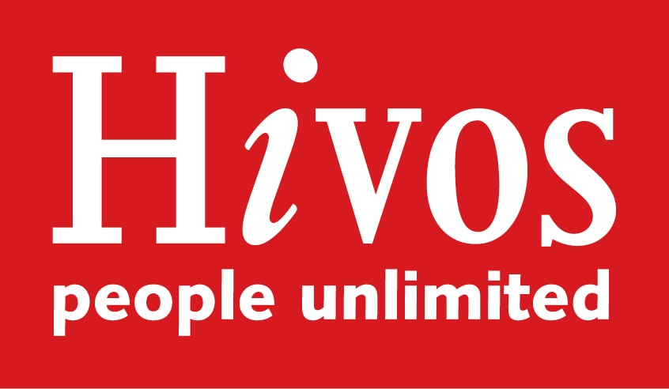

This project took shape thanks to a seminar series at the Berlin-based School of Disobedience called Another AI: Beyond Artificial Intelligences, in January-February 2020. Some of the dictionary entries were written by people who participated in this program: Andrea Goetzke, Andrea Kelemen, Chris Harris, Steph Holl-Trieu, Georgia Lummert, and Paul Wiersbinski. The curriculum for this seminar was shaped through freelance academic, artistic and cultural projects, and my doctoral research. Ahmed Ansari, Johannes Bruder, Georg Diez and Armen Avanessian (School of Disobedience), Ariana Dongus and Matteo Pasquinelli at the AI and Media Philosophy research group at HfG Karlsruhe, Sabine Engelhardt, Tin Geber, Wesley Goatley, Orit Halpern (and everyone who attended the Planetary Futures Summer School, Summer 2017), Alexander Mankowsky, Nishant Shah and several others, are fellow travellers, teachers, and friends in this process. A four month Hivos Digital Futures Fellowship supported the development of this website. It was designed and built by Pratyush Raman and Padmini Ray Murray (Design Beku, Bangalore) and edited by Richa Kaul Padte. Thanks to Kaustubh Srikanth for tech support. A 2020 junior fellowship at the Berggruen Institute continues to provide support to think through many of the ideas here; many thanks to Nils Gilman, Tobias Rees and Tui Shaub for this opportunity.
Maya Indira Ganesh . Berlin, April 2020.
“Hivos Fellowships explore the future of humanist work in digital and creative domains. By collaborating with Hivos staff, the Hivos Fellows investigate new forms of expression to challenge and amplify the impact of Hivos agenda.”